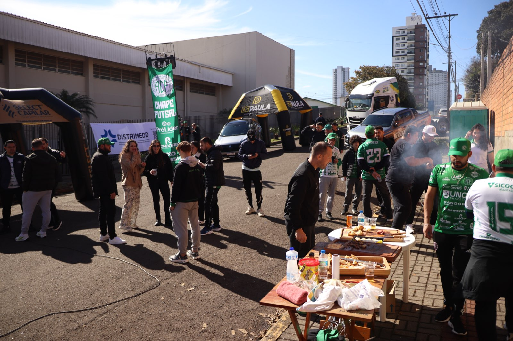
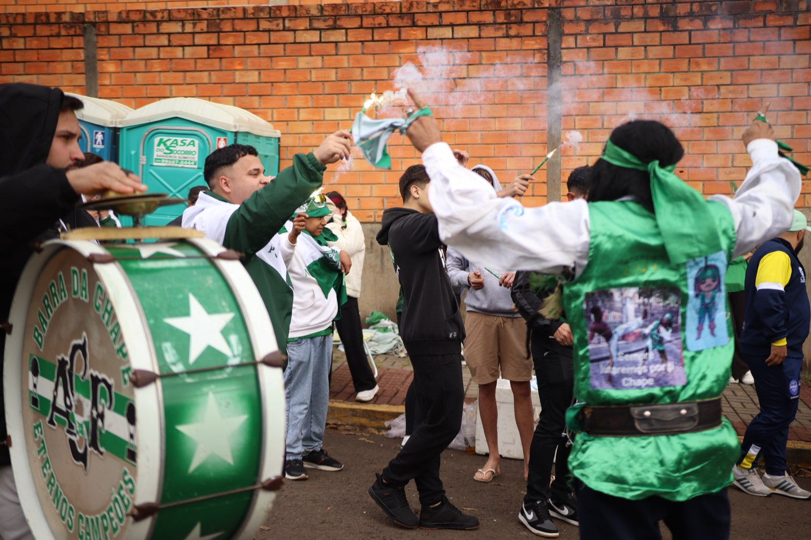

A bola vai rolar para Prefeitura de Chapecó/Chapecoense/Unochapecó x Sorriso às 19h deste sábado (8/8), pela quarta rodada do Campeonato Brasileiro 2026, mas a movimentação no entorno do SESC começa cedo. A partir do meio-dia acontece mais um Esquenta da Chape Futsal na rua Chaim Weltzer, ao lado do ginásio, no bairro Jardim Itália.
Já é uma tradição do Verdão das Quadras mobilizar a torcida horas antes dos jogos. Foi assim, por exemplo, na estreia na edição deste ano da competição nacional. Um grande público compareceu para entrar no clima da partida e depois, nas arquibancadas, empurrou a equipe rumo à vitória sobre o Criciúma, por 3 a 0, no dia 4 de julho.

Para este sábado, a diretoria da Chapecoense novamente convida o torcedor a participar do esquenta. Patrocinadores do clube irão instalar tendas, infláveis e balões, além de utilizar o espaço para ações de marketing. Será servido churrasco e haverá pagode para animar os presentes. No local, também ocorrerá a recepção do time.

“Será mais uma grande oportunidade para os nossos parceiros mostrarem as suas marcas e a força das empresas que acreditam e investem na Chape Futsal. Além disso, o momento é importante para o torcedor viver a expectativa do jogo. A torcida é nosso sexto jogador. Contamos mais uma vez com esse incentivo para conquistarmos um resultado positivo”, disse o presidente da Chape Futsal, Clayton Tressoldi.
O compromisso tem peso significativo para a equipe do técnico Leo Schroeder. Uma vitória sobre o representante do Mato Grosso coloca a Prefeitura de Chapecó/Chapecoense/Unochapecó na vice-liderança do Campeonato Brasileiro de Futsal.
Crédito das fotos: @rogersilva_fotografia/@achapefutsal